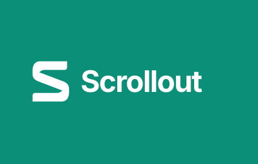
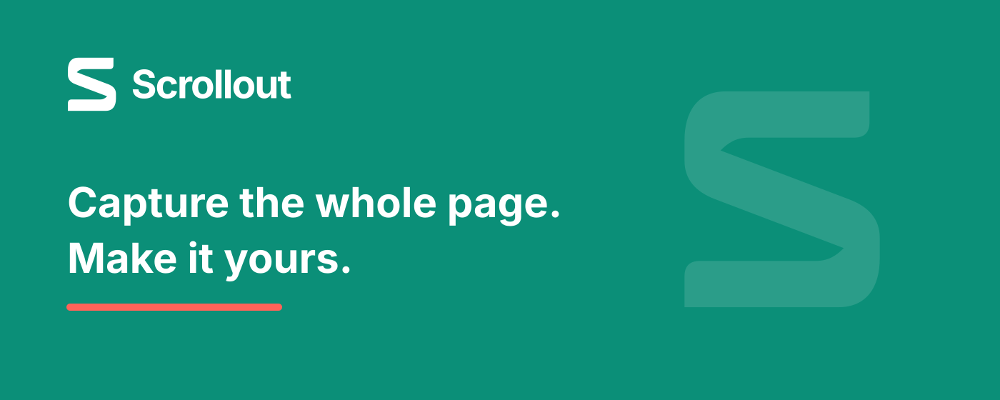

Your Chrome Web Store kit
Version 1.0.3 · FarFlash Group Ltd. · scrollout@farflash.com
Upload Scrollout-1.0.3.zip. Use the extension ZIP, not the source ZIP or this store kit. The public website, DNS, and publisher verification are ready. See submission-checklist.md for the saved draft and remaining publisher certification or review status.
Complete checklist · Listing fields · Data-use guidance · Privacy policy · Website and DNS status
Detailed description
Single purpose
activeTab
scripting
storage
clipboardWrite
Reviewer test instructions
Public links
Verify these load without login before pasting them into the listing.
Homepage: https://scrollout.farflash.com/
Privacy: https://scrollout.farflash.com/privacy/
Support: https://scrollout.farflash.com/support/
Promotional images
Required small promo · 440×280


Optional marquee · 1400×560


Listing screenshots · 1280×800


Before you submit
Declare no remote code. Disclose local website content and captured page metadata accurately. Review the limited-use certifications as the publisher. See submission-state.json for the recorded draft/review status.